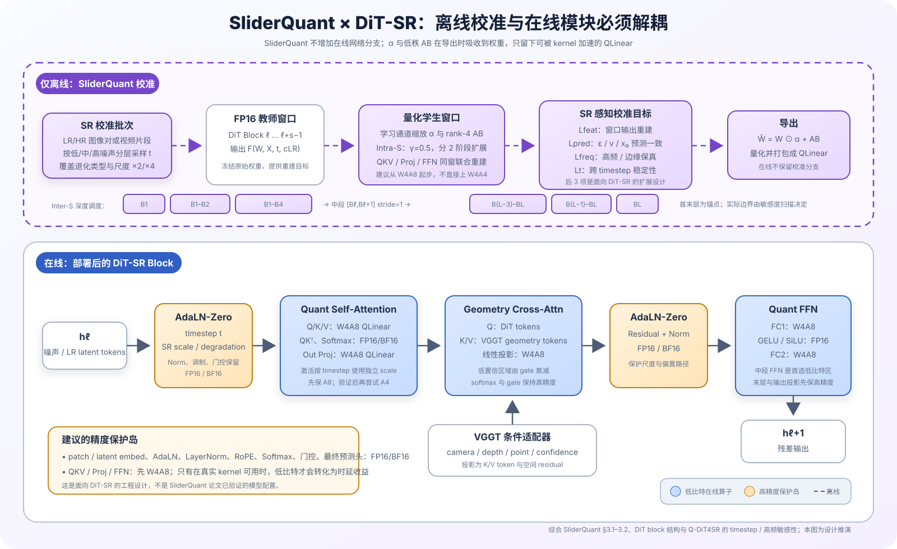
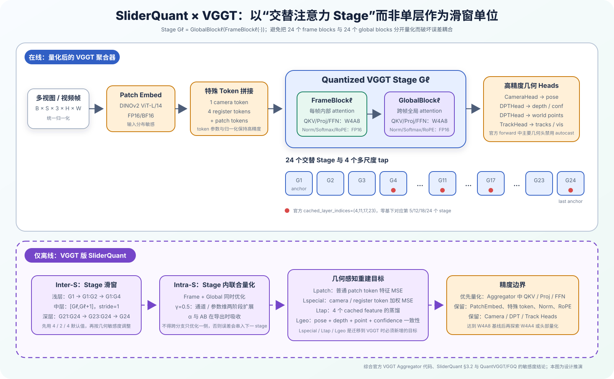
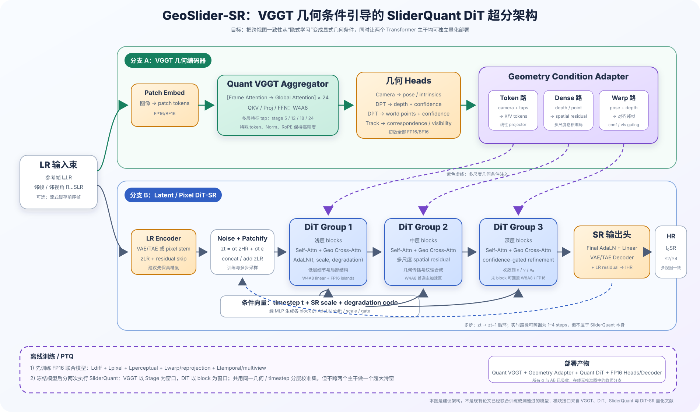
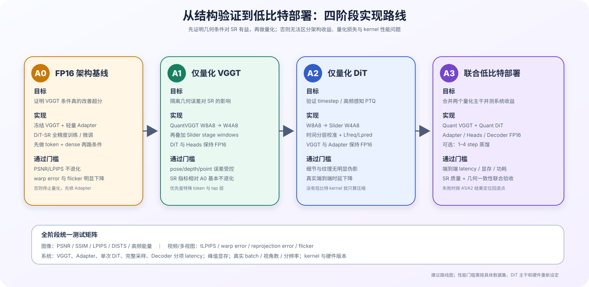

核心结论
方法脉络
关键证据
先澄清：SliderQuant 不是新的在线神经网络层
它改变的是 PTQ 校准时如何把连续层组成重叠窗口、如何学习少量可吸收参数；导出后在线图只剩量化线性层。
SliderQuant 原文的核心是两级滑动：Inter-S 在模型深度上对浅层使用 progressively expanded sliding window、对中层使用固定大小窗口、对深层使用 progressively contracted sliding window；Intra-S 再在当前窗口的权重/激活维度上逐步扩大量化范围。原文默认浅/深层数均为 4，中段窗口 s=2, i=1，γ=0.5。
其可学习参数是通道缩放 α 与 rank-4 的低秩修正 AB。在不引入额外运行时变换的配置中，这些参数被吸收到权重后再量化。因此下面三张网络图都把紫色虚线的 SliderQuant 放在离线 lane，而不是在线主干里。
在线图的正确画法

模块图一：SliderQuant 如何接入 DiT 类超分模型
把每个 DiT block 的 QKV、attention output projection 与 FFN 作为低比特候选，把 timestep 调制、归一化、softmax、门控与最终预测头作为高精度保护岛。
DiT 迁移的关键不是机械复制 LLM 的前 4/后 4 层设置，而是先做 block sensitivity scan。每次只量化一个 block 或一个候选窗口，在分层 timestep 上测窗口输出误差、最终 ε/v/x0 误差和高频损失，再决定浅/中/深区域边界。SliderQuant 的 4/2/4 只能当初始化。
校准目标建议为 L = λfeat·Lfeat + λpred·Lpred + λfreq·Lfreq + λt·Lt。其中 Lfeat 对齐窗口输出，Lpred 对齐去噪预测，Lfreq 约束梯度/小波/频谱高频，Lt 约束不同 timestep 的误差方差。后三项是面向 DiT-SR 的迁移设计，不是 SliderQuant 原文实验。
首版精度建议是 W4A8：权重 4-bit、线性层输入/输出 activation 8-bit；QK 乘积、Softmax、AdaLN、LayerNorm、RoPE、非线性与 residual accumulate 保留 FP16/BF16。若没有能覆盖相应 shape 的 W4A8 GEMM kernel，应先把目标定义为模型压缩，不能承诺真实时延提升。
| 模块 | 首版精度 | 原因 | 回退条件 |
|---|---|---|---|
| Q/K/V、attention out projection | W4A8 | 参数和 GEMM 占比高 | 注意力图漂移或 kernel 不覆盖 shape 时回退 W8A8 |
| FFN FC1/FC2 | W4A8 | 通常是最稳妥的主要加速区 | 末端 FFN 高频误差大时保 W8A8/FP16 |
| AdaLN / timestep MLP / scale-degradation MLP | FP16/BF16 | 尺度与门控误差会广播到全部 token | 稳定后才单独验证 W8A8 |
| Norm、RoPE、QK、Softmax、activation、residual add | FP16/BF16 | 数值敏感且低算量 | 不建议首版量化 |
| Final AdaLN + output projection | FP16/BF16 | 直接控制 ε/v/x0 与纹理 | 只有层级敏感度确认安全才量化 |

模块图二：SliderQuant 如何接入 VGGT
不要把 VGGT 的 48 个 block 简单排成一条链；正确的滑窗原子是同序号 frame/global block 组成的交替注意力 stage。
官方 Aggregator 默认 depth=24，分别持有 24 个 frame_blocks 与 24 个 global_blocks，并按 frame → global 交替运行。因此令 Gℓ = GlobalBlockℓ(FrameBlockℓ(·))，在 G1…G24 上做 Inter-S，能让误差在同一交替周期内被联合重建。若分别对两个 ModuleList 做独立滑窗，frame 分支的量化误差会改变 global 分支的校准分布，反之亦然。
VGGT 不能只用普通 patch-token MSE。建议给 camera/register token 更高权重，并在官方 cached outputs 上做多层蒸馏，再用 pose、depth、world points、confidence 的输出一致性作为任务损失。官方 cached_layer_indices=(4,11,17,23) 是零基索引，对应第 5/12/18/24 个 stage；图中同时保留了源码索引和人类可读 stage 序号。
首版只量化 Aggregator 内的线性层。PatchEmbed、camera/register token 参数、LayerNorm、QK normalization、RoPE、Softmax，以及 Camera/DPT/Track heads 保持 FP16/BF16。官方 VGGT forward 对 camera/depth/point heads 显式关闭 autocast，这支持把 heads 视作高精度边界。
| 损失 | 作用对象 | 建议 |
|---|---|---|
| Lpatch | 各 stage 的普通 patch token | 基础窗口 MSE / cosine，归一化到 token 数 |
| Lspecial | camera + 4 register tokens | 权重高于普通 token，防止位姿条件漂移 |
| Ltap | 源码索引 4/11/17/23 的 concat feature | 对齐 frame/global 拼接后的多尺度特征 |
| Lgeo | pose、depth、world points、confidence | 按原任务尺度归一化后联合蒸馏 |
| Lreproj | 跨视图重投影 | 可选但强烈推荐；直接衡量几何是否仍可用 |

整体 Arch：VGGT 几何条件引导的 DiT 超分
推荐的结合点不是把 VGGT 输出简单拼到 RGB，而是将几何拆成 token、dense map 与 warp 三种接口，分别服务全局语义、空间结构和跨视图对齐。
Token 路：从 camera token、register token 和 4 个 cached feature 中提取/池化 geometry tokens，经线性 projector 映射到 DiT hidden size，作为选定 block 的 cross-attention K/V。建议只在每个 group 的前 1–2 个 block 注入，而不是每个 block 都做 cross-attention，以控制额外时延。
Dense 路：把 depth、depth confidence、world-point XYZ 与 point confidence 拼成稠密几何图，通过轻量多尺度卷积/patch encoder 生成与 DiT token grid 对齐的 spatial residual，并用 zero-init gate 注入。这样在训练初期网络能退化为原始 DiT-SR，避免几何分支一开始破坏生成先验。
Warp 路：利用 pose + depth 把邻帧/邻视角 LR 特征重投影到参考帧；visibility、track confidence 和 depth confidence 共同形成 gate。该路提供显式对齐的真实纹理证据，尤其适合视频/多视图 SR；遮挡、反射或低置信区域必须让 DiT 依靠生成先验补全，而不是强制拷贝。
DiT-SR 可以是 latent DiT 或 pixel-space DiT。latent 版本速度更友好，但 VAE/TAE decoder 可能成为新瓶颈；pixel-space 版本更容易保持局部几何，却带来更长 token 序列。图中用可替换的 LR Encoder/Decoder 接口覆盖两种实现。
推荐的最小可行版本
| VGGT 输出 | Adapter | DiT 注入 | 主要收益 | 主要风险 |
|---|---|---|---|---|
| camera token + pooled taps | Token projector | 浅/中/深 group 的 cross-attention K/V | 全局相机与场景结构 | cross-attention 额外时延 |
| depth/conf + XYZ/conf | Dense multi-scale encoder | selected blocks 的 gated residual | 边缘、平面、遮挡结构 | 几何预测误差污染纹理 |
| pose + depth + tracks/visibility | Differentiable warp | DiT 输入与中层 feature fusion | 跨帧真实细节与一致性 | 动态物体、反射、非朗伯区域 |
| LR reference | Residual path | Decoder 前的 skip | 保真与颜色稳定 | 过强 skip 抑制细节生成 |

联合训练、PTQ 与损失设计
联合模型的训练目标与量化校准目标应分开：先学会使用几何，再冻结模型做小样本低比特重建。
FP16 训练阶段建议使用 Ltrain = Ldiff + λpix L1/Charbonnier + λperc LPIPS/DISTS + λwarp Lwarp + λreproj Lreproj + λtemp Ltemporal。Ldiff 维持生成/去噪能力，像素与感知损失保持单帧质量，warp/reprojection/temporal 项约束跨视图或跨帧一致性。若 VGGT 完全冻结，Lgeo 只训练 Adapter；若后期解冻 VGGT，学习率应显著低于 DiT/Adapter。
PTQ 阶段不需要重新执行完整 SR 训练。冻结全模型，用小型但覆盖充分的校准集分别跑 VGGT Slider windows 与 DiT Slider windows。两者可以共用样本和几何结果缓存，但不要做一个横跨 VGGT→Adapter→DiT 的超大窗口：其显存、优化不稳定性和错误归因都会恶化。
对于多步 diffusion，校准样本要按 timestep 分桶而不是均匀随机抽少数点。至少覆盖高噪声的全局结构建立、中噪声的几何/纹理融合、低噪声的细节收尾；activation scale 可以按 timestep group 存储，而权重 bit 与 Slider window 保持固定。
| 项目 | VGGT | DiT-SR |
|---|---|---|
| 校准样本 | 64–128 个多视图/视频 clips，覆盖视角基线与运动 | 128–256 个 LR/HR 样本 × 3–5 个 timestep buckets |
| Inter-S 单位 | Gℓ = FrameBlockℓ + GlobalBlockℓ stage | 完整 DiT block；cross-attn 与 self-attn 同 block 联合 |
| 默认窗口 | 浅/深 4 stages，中段 s=2,i=1 | 先用 4/2/4，再按 sensitivity scan 重分区 |
| Intra-S | γ=0.5，两阶段 | γ=0.5，两阶段；QKV 与 FFN 可分组验证 |
| 起步精度 | W8A8 baseline → W4A8 | W8A8 baseline → W4A8 |
| 验收 | pose/depth/point/reprojection + 下游 SR | PSNR/LPIPS/DISTS/高频 + 完整采样质量 |
实现路线：不要一上来同时量化两个主干
用 A0/A1/A2/A3 四阶段拆开架构收益、VGGT 量化损失、DiT 量化损失和系统 kernel 收益。
A0 的失败意味着 Geometry Adapter 或训练目标有问题，此时做量化没有意义。A1 失败时检查特殊 token、cached taps 与 heads 的精度边界；A2 失败时检查 timestep 分桶、末端 block、AdaLN 和高频损失。只有 A1/A2 都通过，A3 的联合退化才适合归因于误差叠加。
系统测量必须分项记录 VGGT、Adapter、单个 DiT step、完整 N-step sampler 和 decoder 时延，并给出 batch、帧/视角数、输入分辨率、GPU、kernel 版本。模型 size 或 Ops 降低不能代替 H200/目标卡上的实测 latency。

接口草案：可以直接转成 PyTorch 模块
下列张量接口足以让 VGGT、Adapter 和 DiT-SR 解耦开发，并允许缓存几何结果。
推理 API 可拆成 geometry = quant_vggt(lr_views)、cond = geo_adapter(geometry, lr_views, target_index)、sr = quant_dit_sr(lr_ref, cond, steps)。静态场景或短视频中，VGGT geometry 可低频更新并缓存；但若输入有动态物体，缓存策略必须与可见性/运动检测联动。
| 字段 | 形状示意 | 生产者 | 消费者 |
|---|---|---|---|
multiscale_tokens[k] | [B,S,P,2C]，k∈{4,11,17,23} 源码索引 | VGGT Aggregator | Token projector / Dense encoder |
pose_enc | [B,S,9] | CameraHead | Warp adapter / condition MLP |
depth, depth_conf | [B,S,H,W,1], [B,S,H,W] | DPT depth head | Dense + Warp adapter |
world_points, point_conf | [B,S,H,W,3], [B,S,H,W] | DPT point head | Dense adapter / reprojection loss |
geo_tokens | [B,M,Ddit] | Token projector | selected DiT cross-attention |
geo_residuals[g] | [B,N,Ddit] per DiT group | Dense/Warp adapter | gated residual injection |
confidence_gate[g] | [B,N,1] | confidence fusion | cross-attn / residual gate |
局限与开放问题
- SliderQuant 的论文结果来自 LLM；本文对 DiT-SR 与 VGGT 的窗口单位、损失和精度岛均为迁移设计，尚无联合模型实验。
- VGGT 几何条件是否提升真实世界 SR，取决于退化、动态物体、相机运动和遮挡；VGGT 在低分辨率严重退化输入上的几何精度需单独验证。
- Q-DiT4SR、QuantVGGT/FGQ 与 SliderQuant 的量化器和 kernel 并非天然兼容，工程实现需要统一 scale/granularity、权重打包和算子接口。
- W4A8 或 W4A4 的理论 Ops/模型尺寸下降不等于端到端加速；Adapter、decoder、采样步数和 kernel 覆盖率可能成为主瓶颈。
- 图中 4/2/4 Slider window 与损失权重只是起点，必须通过目标模型的 sensitivity scan 与消融重新选择。
证据与推断边界
- 论文直接证据：SliderQuant 的 PESW/FSSW/PCSW、Intra-S、α+AB；VGGT 的 24 frame/24 global blocks、特殊 token、cached indices 与高精度 heads；Q-DiT4SR 的跨层/跨 timestep 精度需求。
- 代码直接证据：官方 VGGT commit a288dd0f 中
depth=24、aa_order=[frame,global]、camera/register token、cached_layer_indices=(4,11,17,23)与 geometry heads 的 autocast 边界。 - 本文设计推演：把 frame/global 对组成 stage、三路 Geometry Adapter、联合损失、W4A8 精度表、分阶段实现路线；这些不是任一论文已经报告的消融或吞吐结果。
- 没有给出 FPS/时延预测，因为具体 DiT 主干、采样步数、输入视角与分辨率、部署 kernel 尚未确定。
来源与版本
核查与设计时间：2026-11-18（Asia/Shanghai）。本页在此前 SliderQuant/CAT-Q→diffusion SR 与 VGGT-family 评估基础上，进一步给出模块和整体 arch；所有新画架构均标为设计推演，未冒充论文实验。
- SliderQuant paper — Inter-S, Intra-S, α+LoRA-style AB
- SliderQuant code
- VGGT paper
- VGGT official code
- Q-DiT4SR — DiT Real-ISR PTQ and timestep-aware precision
- DiT — Diffusion Transformer block
- QuantVGGT — VGGT-specific PTQ
- FGQ — task-aware Fisher sensitivity for VGGT
- ViDiT-Q — DiT PTQ and low-bit kernels
- QuantVSR — diffusion video SR quantization